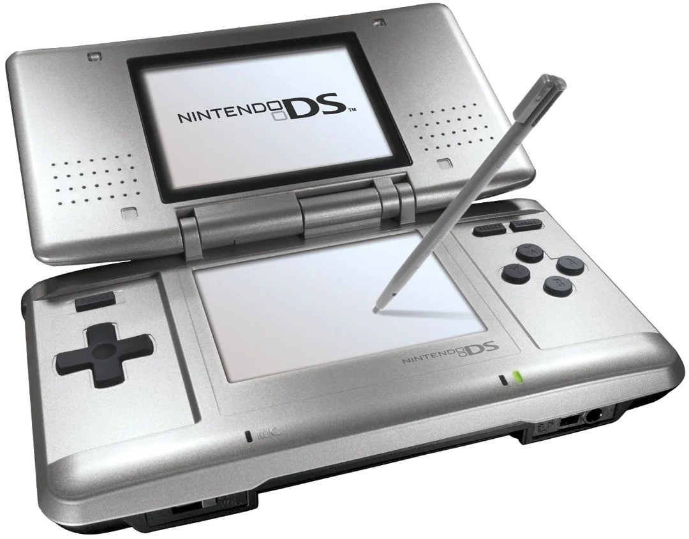
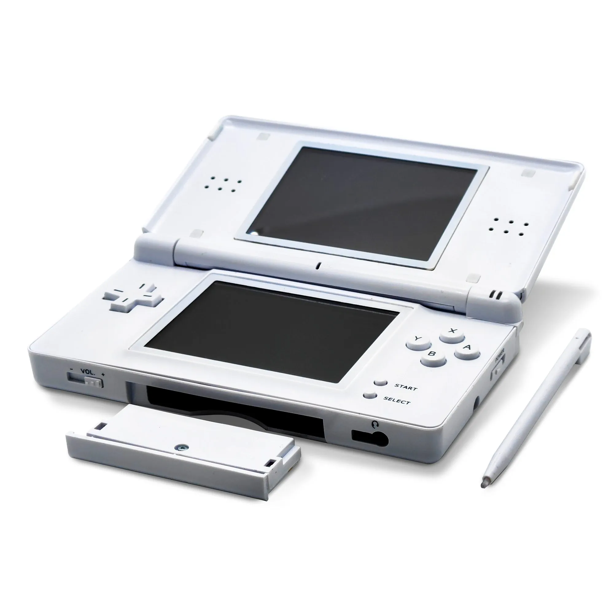

Hardware Gallery




DS Timeline
üïπÔ∏è 2004 ‚Äî Nintendo DS launches with dual screens and stylus control.
üí° 2006 ‚Äî DS Lite redesign: slimmer, brighter, and wildly popular.
üì∑ 2008 ‚Äî DSi adds cameras and digital downloads (DSiWare).
üîç 2009 ‚Äî DSi XL: larger screens for family and group play.
Click a timeline entry to learn more and see the matching console!
Touchscreen Demo
Tap the boxes to interact!